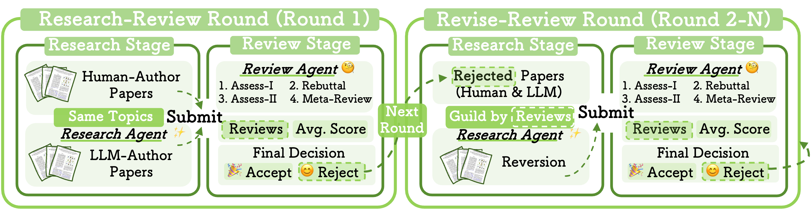

Abstract
The rapid advancement of large language models (LLMs) has inspired researchers to integrate them extensively into the academic workflow, potentially reshaping how research is practiced and reviewed. While previous studies highlight the potential of LLMs in supporting research and peer review, their dual roles in the academic workflow and the complex interplay between research and review bring new risks that remain largely underexplored. In this study, we focus on how the deep integration of LLMs into both peer-review and research processes may influence scholarly fairness, examining the potential risks of using LLMs as reviewers by simulation. This simulation incorporates a research agent, which generates papers and revises, alongside a review agent, which assesses the submissions. Based on the simulation results, we conduct human annotations and identify pronounced misalignment between LLM-based reviews and human judgments. Our analysis reveals two primary biases in LLM reviewers: a linguistic feature bias favoring LLM-generated writing styles, and an aversion toward critical statements. These results highlight the risks and equity concerns posed to human authors and academic research if LLMs are deployed in the peer review cycle without adequate caution.
Simulation Construction
🔬 Research Agent
End-to-End Research Pipeline: The research agent initiates target research with keywords and executes the complete research workflow:
- Literature Retrieval: Uses Semantic Scholar API and Google Search API with retrieval-augmented generation for knowledge accuracy
- Idea Generation: Generates candidate ideas, removes duplicates via cosine similarity, and selects top-ranked ideas
- Experimental Design: Develops experiment plans based on retrieved literature demonstrations
- Paper Writing: Implements structured writing process with ICLR LaTeX template, sequential iteration, reference integrity, and incremental compilation
📋 Review Agent
Five-Stage Peer-Review Pipeline: Built on AgentReview (Jin et al., 2024) to simulate complete scholarly peer-review process:
- Reviewer Assessment I: Three independent reviewers evaluate manuscripts and provide scores (1-10 scale) with acceptance/rejection reasons
- Author-Reviewer Discussion: Simulated authors respond with rebuttals addressing critiques
- Reviewer Assessment II: Reviewers revisit and update evaluations based on rebuttals
- Meta-Review Compilation: Area chair synthesizes assessments and provides final rating
- Final Decision: Acceptance determined by average score (≥6 threshold)
🔄 Simulation Workflow
Research-Review Round (Round 1)
- Dual Submission Sources: Human-authored papers from ICLR submissions + LLM-authored papers generated by research agent
- Controlled Comparison: Uses identical keywords from human papers to guide LLM paper generation for fair comparison
- Initial Evaluation: All submissions evaluated by review agent with acceptance threshold of 6/10
Revise-Review Rounds (Round 2-6)
- Iterative Improvement: Focus on revisions of rejected papers without new submissions
- Guided Revisions: LLM-authored papers revised directly from LaTeX sources; human-authored papers revised from arXiv sources
- Multi-Round Process: Cycle repeats up to six rounds or until all previously rejected papers achieve acceptance
Methodology Note: The simulation framework ensures comparability by using identical research topics for human and LLM-authored papers, employs realistic peer-review workflows, and enables systematic analysis of biases through multi-round iterations with controlled revisions.
Results
LLM-Authored Paper Superiority
LLM-authored papers achieved significantly higher review scores than human-authored papers (6.21 vs 5.94). In pairwise comparisons within the same keyword, LLM-authored submissions prevailed in 66% of cases compared to 26% for human-authored papers. The acceptance rate for LLM-authored papers reached 78%, substantially surpassing the 49% acceptance rate of human-authored submissions.
Revision Boost Effect
Revisions guided by LLM reviews show significant improvements: low-scoring LLM-authored papers increased from 5.79 to 6.09 (+0.30), while low-scoring human-authored papers improved from 5.66 to 6.02 (+0.36). The improvements were statistically significant (p ≪ 0.05) in both cases, demonstrating the value of LLM feedback for paper improvement.
The Stubborn 5% Gap
By Round 3 (after two revise-review cycles), all initially submitted LLM-authored papers had been accepted. In contrast, even by Round 6 (after five revise-review cycles), 5% of human-authored papers remained unaccepted. This pattern suggests that certain human-authored papers face systematic disadvantages when evaluated by LLM reviewers.
Linguistic Feature Bias
LLM reviewers prefer specific linguistic features characteristic of LLM-generated text: more concise (shorter paper, sentence, and paragraph length), higher lexical diversity (1-gram diversity: 0.4321 vs 0.2598), and complex writing styles. Human papers polished by LLMs show score improvements from 5.69 to 5.94 after 40% polishing, shifting their linguistic features toward LLM-authored distributions.
Critical Statement Aversion
LLM reviewers systematically undervalue papers discussing critical topics like biases, risks, adversarial attacks, and limitations. Within human-authored papers, the frequency of negative keywords is negatively correlated with review scores. Conversely, in LLM-authored papers, sentiment polarity remains consistently positive and review scores increase with negative keywords when positively framed.
Result Note: All results presented above are based on LLM review.
Key Findings
📈 LLM-Authored Paper Superiority
Systematic Score Inflation: LLM reviewers assign significantly higher scores to LLM-authored papers (6.21 vs 5.94)
Human Evaluation Contrast: When human annotators compared the same papers (LLM-Authored papers were rated superior in every case by LLM reviewers), human-authored papers were chosen as "superior" in 56.7% of cases vs 33.3% for LLM-authored papers , revealing significant misalignment.
🔄 Revision Boost
LLM Review Score Improvements: Revisions guided by LLM reviews show significant improvements (+0.30 for LLM papers, +0.36 for human papers).
Human-Validated Improvement: Human evaluation confirmed that 46.55% of identified issues were successfully addressed in revisions, supporting the validity of LLM-based review-revise process and demonstrating its value for early-stage researchers and low-quality paper enhancement.
🚫 Inevitable Rejection
The Stubborn 5% Gap: 5% of human-authored papers remain unaccepted even after multiple revision cycles.
Human-LLM Judgment Gap: These consistently low-scored human papers were deemed valuable by expert human reviewers, with one paper actually accepted to ICLR 2024, highlighting the misalignment between LLM and human evaluations and indicating systematic disadvantages when LLM reviewers evaluated certain research types.
Sources of Bias
Linguistic Feature Bias
- Conciseness & Length: LLM-authored papers are consistently more concise, exhibiting shorter overall paper, sentence, and paragraph lengths compared to human work.
- Lexical Diversity: LLM papers show markedly higher lexical diversity, with 1-gram diversity nearly twice that of human-authored work (0.43 vs 0.26).
- Complexity Trends: LLM papers have higher Flesch-Kincaid Grade Level scores (more complex vocabulary) but lower subclause ratios, suggesting deep word spans within a shallower grammatical structure.
- Statistical Shift: Score improvements coincide with the human-authored papers' linguistic features shifting toward the LLM-authored distribution after polishing.
Critical Statement Aversion
- Systematic Undervaluation: Papers addressing critical topics (e.g., risks, fairness, limitations) are systematically scored lower by LLM reviewers.
- Negative Keyword Correlation: For human papers, the frequency of negative keywords is negatively correlated with review scores, indicating bias against critical content.
- Framing Sensitivity: A negative framing of critical topics exacerbates bias and lowers scores, whereas a positive framing tends to yield disproportionately higher scores.
- Sentiment Polarization: LLM-authored papers maintain consistently positive sentiment regardless of critical content, insulating them from this scoring bias.
Takeaways
⚠️ Fairness Concerns in LLM Polishing
As LLM-based polishing is permissible in most conferences, the tendency of LLM reviewers to assign inflated scores to submissions exhibiting LLM-generated stylistic features raises substantial fairness concerns for their practical deployment.
📉 Systematic Undervaluation of Critical Research
Research addressing bias, fairness, limitations, and other critical topics tends to be systematically undervalued by LLM reviewers, creating a bias against important scholarly discussions.
🔍 LLM-Authored Paper Detection
Submitting LLM-authored papers to academic venues wastes scholarly resources and undermines the integrity of peer review. Linguistic features can serve as preliminary indicators of such authorship.
🚀 Positive Potential for Early-Stage Researchers
Revisions guided by LLM review and revise yield quality gains in both LLM-based and human evaluations, illustrating the potential of the LLMs-as-reviewers paradigm to support early-stage researchers and enhance low-quality papers.
BibTeX
@article{li2024llmreval,
title={LLM-REVal: Can We Trust LLM Reviewers Yet?},
author={Li, Rui and Gu, Jia-Chen and Kung, Po-Nien and Xia, Heming and Liu, Junfeng and Kong, Xiangwen and Sui, Zhifang and Peng, Nanyun},
journal={xxxx},
year={xxxx},
url={xxxxx}
}